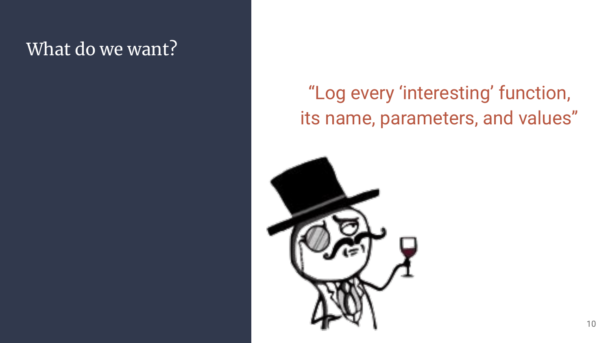

This article is the transcript of a talk (FR) @Groumpf_ and I gave for the RumpARennes and GreHack in 2022, kudos to the staff!
Slides: Custom-php-Introspection-for-0-Day-Research.pdf
Like previous conference-related articles, this one will sound more like a transcript than a regular “technical & in depth presentation”.
Read the slides first, their explanation will be written below.

1. Whoami || Whoarewe

If you’re here, you already know me. I like web 0-day research, and infosec in general. But for this specific project, I was wasting tons of time coding in C for low level needs in the core of Php. In the meantime, I really wanted to share projects with close-friends as it’s way funnier that way. Therefore, I pinged one that had the skills I needed, and the fun I was looking for: @Groumpf_
TODO: groumpf prez/intro
2. Introspection 101
TODO: groumpf

Introspection can be used in many ways, so here are a few examples to better understand what we’re speaking about.
- Debugging: Ipdb is a python interactive debugger relying heavily on python’s own introspection features like dir, type, getattr, etc.
- Optimisation: Perf is a linux tool that can be used to profile a tool by tracing its behavior, pinpointing most used functions and bottlenecks.
- Fuzzing: Burp infiltrator is a single jar file one can inject in a java backend to get information about juici classes loaded or dangerous functions reached while fuzzing with BurpSuite.
- Dynamic Security Checks (DAST): Sqreen is a product one can use to instrument an application during its runtime to monitor for dangerous behaviors and pitfalls, it hooks functions and detect quirks while keeping an accurate vision of the context they apprea in.
Long story short, what do we want?
Know WTF is going on inside the box

Said in a more classy way, we want to know which (dangerous) function are called, when, where, by whom, and the payload or parameter that reached it.
3. Php-Internalog & Iterations
Before we begin, on the left side is a sample php file containing some smelly code. This is not exhaustive, but good enough for a first approach to see what we’ll be able to catch as we iterate!
V0 - ltrace, strace, LD_PRELOAD

The first approch I had was really dummy, and I was 99% sure nothing really interesting would stand out as it’s way too low level for the type of bug we want to catch. But as it costs no time, better double check just in case!
Se there we go with ltrace and strace. I omitted the attempt with LD_PRELOAD as this was slightly better, but was suffering the same issues.
And as expected, we’re getting low level debug informations. It’s not “nothing” as we’re already able to catch file reads, listing, writing, socket calls, library calls, and so on. But for logic bugs, or higher level issues, it’s a dead-end.

Self explanatory slide noise
It’s fast at setup time and runtime, but it’s not showing us what we need. Next!
V1 - Fork php-7.4, UDP client, netcat


V2 - xDebug is all you need, but SLOW AF

V3 - Fork php-7, curl, sync
 TODO: groumpf
TODO: groumpf
 TODO: groumpf
TODO: groumpf
 TODO: groumpf
TODO: groumpf
TODO: groumpf
TODO: groumpf
V4 - Fork php-7, async UDP, python backend
TODO: groumpf
 TODO: groumpf
TODO: groumpf
 TODO: groumpf
TODO: groumpf
 TODO: groumpf
TODO: groumpf
V5 - rump@StHack, long live Snuffleupagus


4. Pentest, Methodology, and Findings


Demo, RCE post-auth on Spip 4.2

5. Outro

What we introduced here is a first naive approche to introspection applied to offensive research. This is definitely not a finished product in any way. Yet we really wanted to lay some bricks so we can build as a community, and not as individual researchers.

Don’t worry tho, time passes, skills are coming along, and… At some point we’ll definitely try to attack battle-tested frameworks to see what they’re truly worth security-wise! :D
6. Kudos
As always, let’s take the time to thank all those who have made these events and research projects possible!
- @elvanderb at StHack for mentioning SnuffleuPagus during my rump’s Q&A
- @dustriorg / Jvoisin for actually maintaining SnuffleuPagus, kudos to the previous researchers as well
- @newsoft for drinking at Meetups, knowing stuff, and helping cool folks meet to engage in new projects!
- Staff teams from GreHack and RumpARennes for the events!
- The community (you), otherwise there would be no event ;)
- Php for being… Php… :)
We (@Groumpf_ and I) wish you had a great time reading this article.
Feel free to reach out for new cool research ideas!
Until we meet again: Happy breaking!